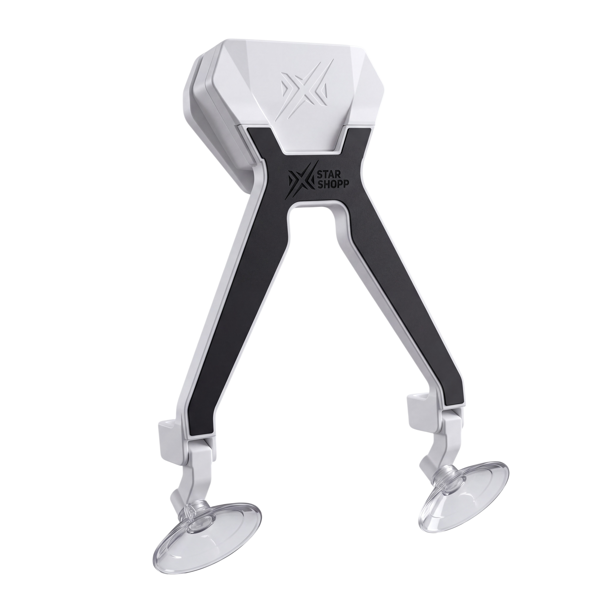
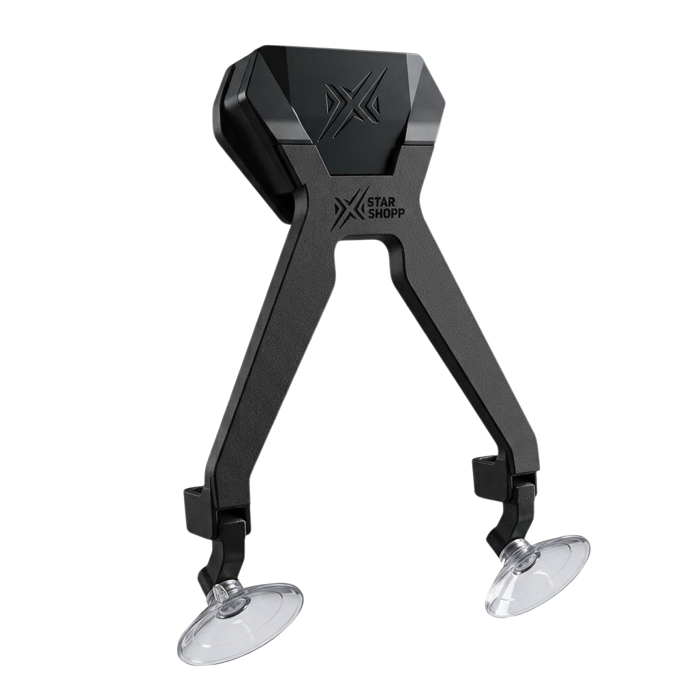
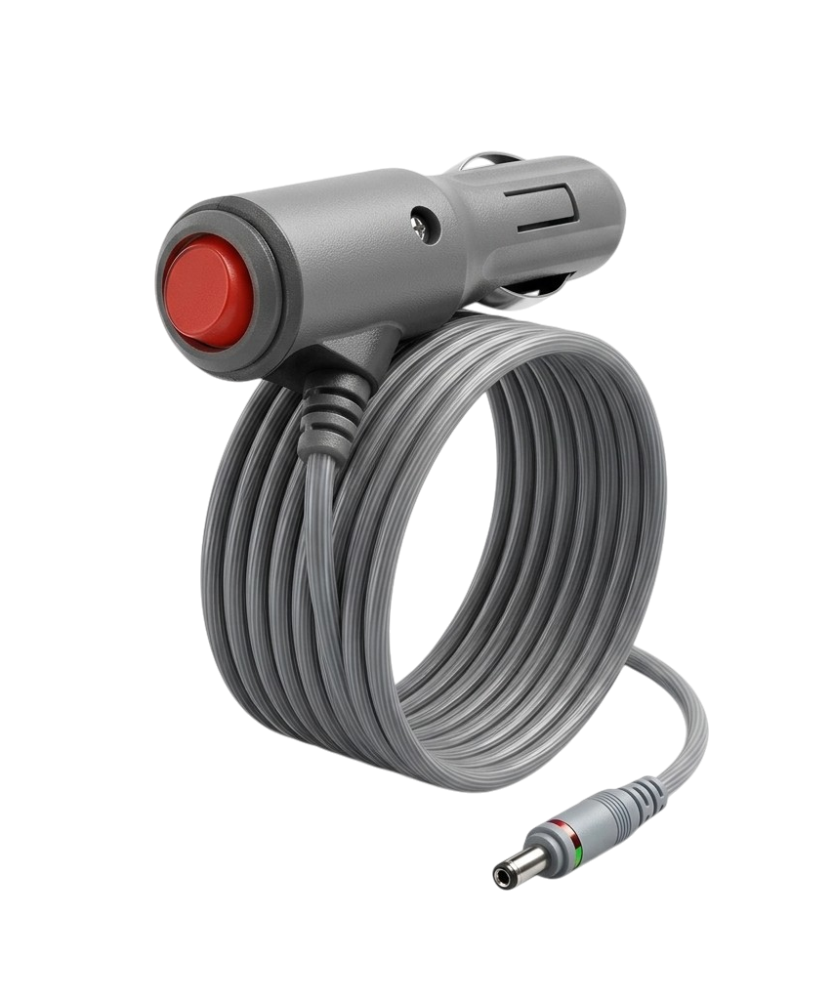
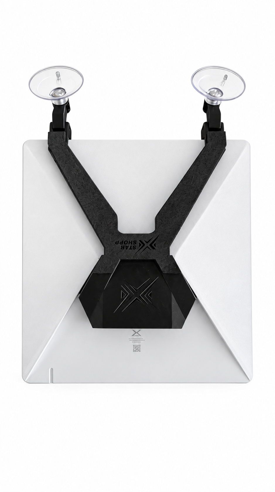
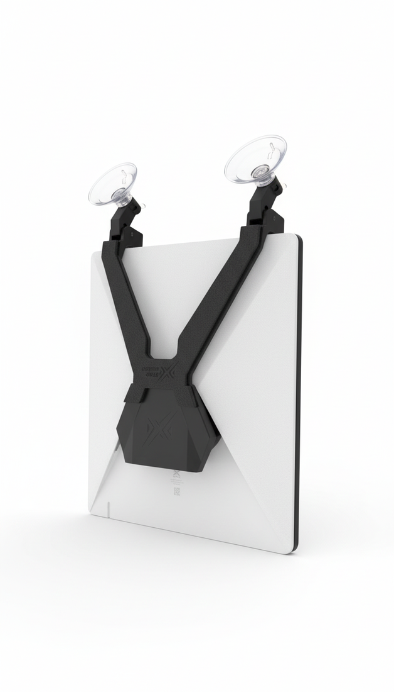
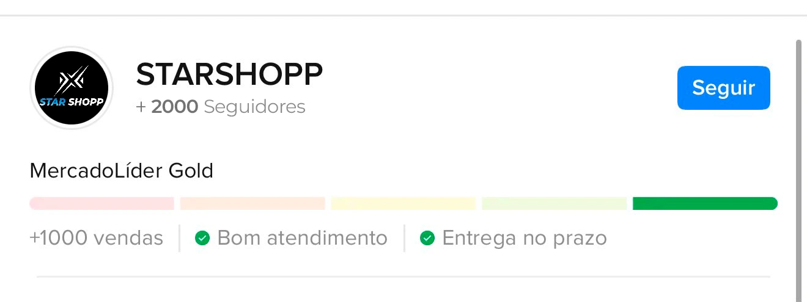
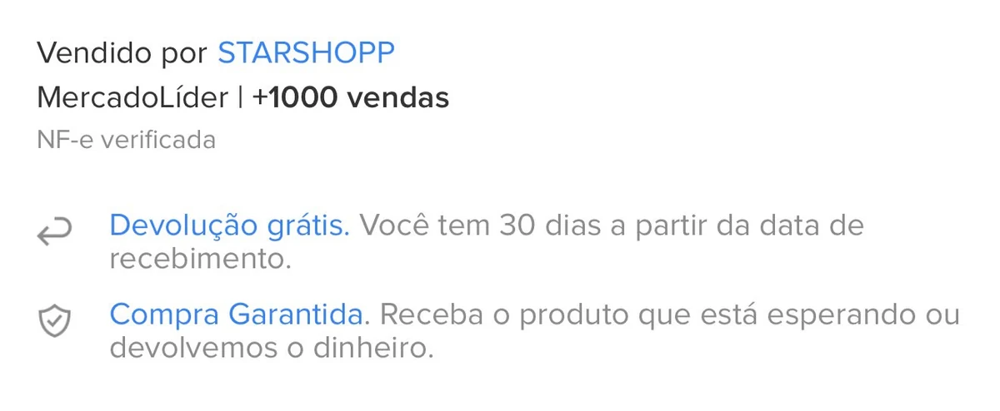
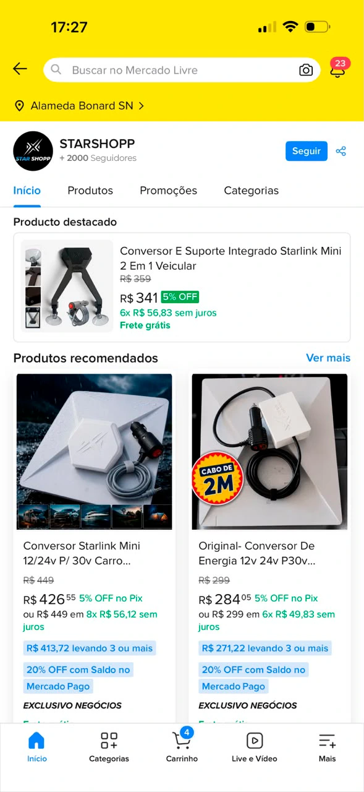
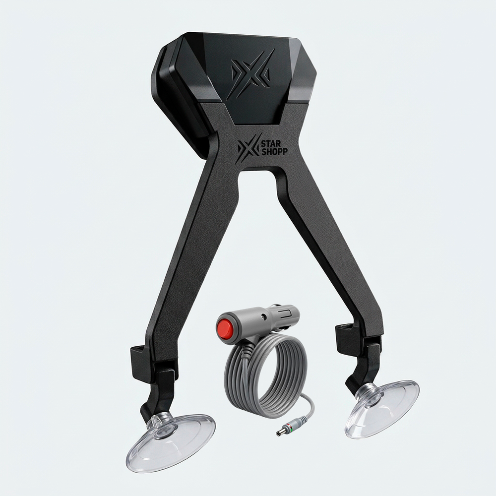

Feito pra Starlink Mini
Não é um suporte genérico adaptado — o encaixe foi desenhado especificamente pro formato da Starlink Mini, sem folga e sem risco de soltar.
Uma solução compacta para uso móvel: suporte por ventosas e conversor integrado 12V para 30V. O cabo veicular acompanha o kit - escolha o tamanho ideal para o seu uso.


Instale sua Starlink Mini em uma superfície adequada e alimente o conjunto pela tomada 12V do veículo.
VER COMO FUNCIONA ↓A Starlink Mini precisa de mais tensão do que a tomada 12V do carro entrega sozinha - por isso a maioria das instalações vira uma "gambiarra", com conversor avulso e cabos soltos. O Conversor e Suporte Integrado da Star Shopp resolve isso: o Step-Up 12V→30V já vem embutido no próprio suporte, moldado exatamente pro formato da Starlink Mini.
Tudo foi pensado para deixar a instalação da Starlink Mini mais organizada e fácil de levar para o próximo destino.
Não é um suporte genérico adaptado — o encaixe foi desenhado especificamente pro formato da Starlink Mini, sem folga e sem risco de soltar.
O conversor Step-Up 12V→30V fica embutido no próprio suporte, eliminando aquele componente avulso balançando pelo carro.
O plug veicular tem botão liga/desliga e indicador luminoso — você sabe na hora se está energizando corretamente.
Segura firme mesmo com a trepidação da estrada, sem ficar cedendo ao longo da viagem.
EVA Premium de 3 mm no ponto de contato, protegendo a antena de riscos e impactos leves.
Funciona em qualquer aplicação com plug 12V: carro, caminhão, motorhome ou embarcação.
O conversor Step-Up embutido entrega a tensão que a Starlink Mini precisa, com estabilidade e proteção contra sobrecorrente.
Use as ventosas em uma superfície adequada e faça o encaixe.
Use o cabo veicular que acompanha o kit, ligando-o ao plug veicular 12V e ao conversor integrado.
O conversor faz a conversão 12V para 30V para a Starlink Mini.
Você recebe o suporte com o conversor já embutido, mais o cabo veicular completo, no comprimento que você escolher. O encaixe segue exatamente o painel traseiro da Starlink Mini, sem folga.



Antes de chegar até você pelo nosso site, nossa operação já atendeu clientes em marketplaces reconhecidos, construindo experiência em vendas, atendimento e envio.



Uma única peça, alimentação pelo plug veicular 12V e menos componentes para organizar.

Fotos de clientes compartilhando o recebimento e a utilização do produto após a compra.
"Chegou bem embalado e antes do prazo. Já coloquei no carro e gostei demais, ficou bem firme no vidro. Agora ficou bem mais fácil levar a Starlink nas viagens."
"Rapaz, gostei do suporte. Pensei que ia ser meio complicado de colocar, mas foi bem simples. As ventosas seguram muito bem e o conversor funcionou certinho."
"Comprei para usar na estrada e até agora está perfeito. Não fica sambando no vidro e a Starlink fica bem presa. Para quem viaja bastante, facilita muito."
"Gostei da qualidade, principalmente do acabamento. Dá pra ver que é um produto bem feito. Instalei na minha Mini e ficou muito bom no carro."
"Chegou aqui e já fui testar. Funcionou de primeira. O que mais gostei foi não precisar ficar improvisando suporte e cabo toda vez que vou sair. Ficou bem mais prático."
Nossa equipe responde suas perguntas sobre o produto, frete ou seu pedido antes de você finalizar a compra.
Falar com um atendenteNao. O kit e composto pelo suporte com conversor integrado e pelo cabo veicular. A antena Starlink Mini não acompanha o produto.
A alimentação é feita pelo plug veicular 12V conectado à tomada do veículo. O conversor integrado faz a conversão para 30V.
Nao. Este modelo foi desenvolvido especificamente para a Starlink Mini.
Sim. O cabo veicular acompanha o kit junto com o suporte e o conversor integrado, no tamanho escolhido (2, 3 ou 5 metros).
Preto e branco.
O prazo médio de entrega é de até 15 dias úteis para todo o Brasil, podendo variar conforme a região e a transportadora selecionada no checkout.
Sim. Você tem até 7 dias corridos após o recebimento para desistir da compra, sem precisar justificar, com reembolso integral (direito de arrependimento previsto no Código de Defesa do Consumidor). Também há garantia contra defeitos de fabricação. Veja todos os detalhes na Política de Trocas e Devolução.
A Star Shopp é operada pela STAR SHOPP LTDA, CNPJ 59.685.751/0001-31, com sede em Goiânia/GO. Os dados completos estão no rodapé desta página, junto com nossos Termos de Uso e Política de Privacidade.